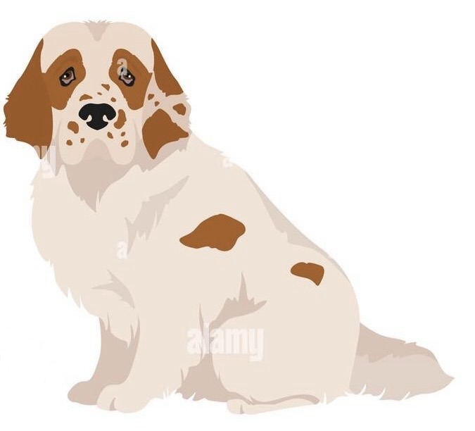

Clumber Spaniel Breed Colours
Clumber Spaniel
The Clumber Spaniel is calm, dignified, and known for its gentle nature and distinctive heavy build.
Recognised Colours

The Clumber Spaniel is calm, dignified, and known for its gentle nature and distinctive heavy build.
